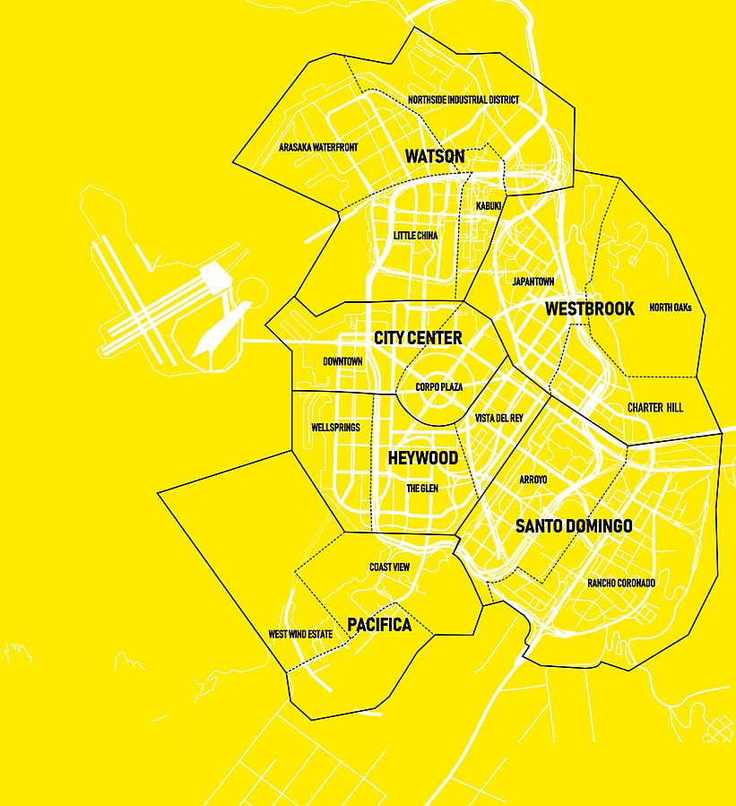

Cyberpunk 2077 (с англ. — «Киберпанк 2077») — компьютерная игра в жанре action/RPG, разработанная и изданная польской студией CD Projekt. Действие игры происходит в 2077 году в Найт-Сити, вымышленном североамериканском городе из вселенной Cyberpunk.Игрок управляет настраиваемым протагонистом по имени Ви, который работает наёмником и владеет навыками взлома и боя.
Игра была разработана с использованием движка REDengine 4 командой из примерно 500 человек. Создатель Cyberpunk Майкл Пондсмит был консультантом по разработке, а канадский актёр Киану Ривз озвучил и обеспечил визуализацию одного из главных персонажей.Cозданием музыкального сопровождения руководил польский композитор Марцин Пшибылович.
Игра была выпущена 10 декабря 2020 года на PlayStation 4, Stadia, Windows и Xbox One. В 2021 году планировалось выпустить её и на PlayStation 5 и Xbox Series X/S. Среди критиков Cyberpunk 2077 получила преимущественно положительные отзывы, главным образом, за своё повествование, фабулу и графику, хотя некоторые из её игровых элементов вызвали неоднозначнуюреакцию рецензентов. В то же время игра активно критиковалась за многочисленные ошибки функционирования; особенно активно эти проблемы затронули консольные версии.

Cyberpunk 2077 — игра от первого лица. Игрок управляет полностью настраиваемым персонажем по имени Ви. Значения HUD варьируются в зависимости от того, развитию каких умений игрок хочет уделить внимание: хакерству, техническим способностям или бою. Для установки имплантов и обновления программного обеспечения Ви нужно обратиться к «риперу»; в то же время чёрные рынки предлагают возможности, по законам игровой вселенной доступные только военным. Редкость любого снаряжения показана соответствующим цветом их иконок. В игре представлено как оружие ближнего боя, так и дальнобойное оружие; последнее представлено в трёх типах, все из которых могут быть настроены под игрока и модифицированы: силовое (стандартное), техническое (пробивающее стены и броню противника) и «умное» (с самонаводящимися пулями). Дальнобойное оружие обладает способностью отражать пули в направлении цели и замедлять их. Ви может наносить и получать четыре типа урона: физический, тепловой, электромагнитный и химический. Использование оружия повышает точность и скорость перезарядки, и это отражается на анимации персонажа. Игра может быть завершена без убийства кого-либо, с использованием несмертельного оружия и программного обеспечения.
Действие происходит в условиях открытого мира в вымышленном городе Найт-Сити, расположенном в Калифорнии. Найт-Сити состоит из шести районов.В зависимости от места происшествия, в случае совершения Ви преступления, могут быть призваны правоохранительные органы. Полноценный динамичный цикл день — ночь и меняющаяся погода влияют на поведение неигровых персонажей.В Найт-Сити есть неанглоязычные NPC, речь которых можно переводить с помощью специальных имплантов. Помимо этого, в игре доступны «брейндансы» — устройства, позволяющие персонажу просматривать отрывки воспоминаний других людей, переживая, в том числе, чувства и эмоции, которые те испытывали в момент записи. Взаимодействие с NPC и процесс выполнения квестов продвигается с помощью разветвлённых диалогов. Очки опыта даются за выполнение основных квестов и увеличивают статистику HUD; выполнение второстепенных квестов повышает репутацию игрока, благодаря чему становятся доступными новые навыки, продавцы, места и дополнительные квесты. Большинство второстепенных квестов даётся так называемыми «фиксерами». Дополнительная деятельность включает в себя автогонки, занятия хакерством, боксом, боевыми искусствами и стрельбой. Действия игрока во время основной сюжетной линии приводят к различным концовкам!
 Cyberpunk 2077 (с англ. — «Киберпанк 2077») — компьютерная игра в жанре action/RPG, разработанная и изданная польской студией CD Projekt. Действие игры происходит в 2077 году в Найт-Сити, вымышленном североамериканском городе из вселенной Cyberpunk.Игрок управляет настраиваемым протагонистом по имени Ви, который работает наёмником и владеет навыками взлома и боя.
Cyberpunk 2077 (с англ. — «Киберпанк 2077») — компьютерная игра в жанре action/RPG, разработанная и изданная польской студией CD Projekt. Действие игры происходит в 2077 году в Найт-Сити, вымышленном североамериканском городе из вселенной Cyberpunk.Игрок управляет настраиваемым протагонистом по имени Ви, который работает наёмником и владеет навыками взлома и боя.